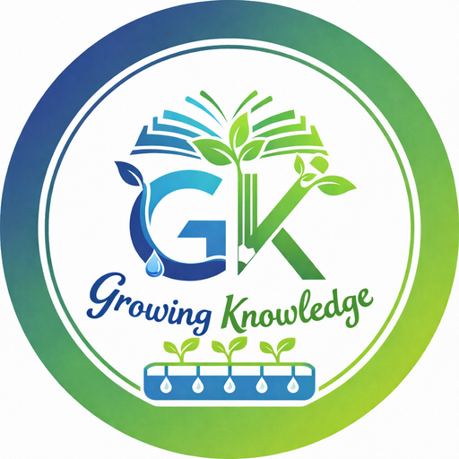

Coltivare piante per crescere idee
"Un progetto dedicato alla sostenibilità, alla ricerca scientifica e all'uso responsabile dell'acqua."
Scopri il progettoUn'iniziativa nata dall'incontro tra scuola, ricerca scientifica e attenzione al territorio della Lomellina.
Il progetto ha preso avvio nell'estate del 2023, grazie al finanziamento ottenuto attraverso il bando nazionale #iosonoAmbiente, promosso dal Ministero dell'Istruzione e del Merito, in collaborazione con il Ministero dell'Ambiente e della Sicurezza Energetica e con il Ministero dell'Università e della Ricerca.
L'idea nasce da una riflessione sul territorio della Lomellina, area storicamente legata alla coltivazione del riso, oggi sempre più esposta agli effetti della crisi climatica e alla crescente scarsità delle risorse idriche.
Un riferimento concreto è la grave siccità dell'estate 2022, che ha causato una significativa riduzione della produzione risicola nella regione.
Il progetto collega idealmente due luoghi simbolo:
Promuovere una consapevolezza scientificamente fondata delle problematiche legate al cambiamento climatico e alla gestione sostenibile dell'acqua.
Comprendere il legame tra riscaldamento globale, riduzione dei ghiacciai alpini e disponibilità idrica nel bacino del Po.
Sperimentare soluzioni innovative per ridurre il consumo di acqua in agricoltura attraverso la coltivazione idroponica del riso.
Avvicinare gli studenti alle pratiche della ricerca scientifica, anche in collaborazione con il mondo universitario.
Costruire un polo didattico stabile, aperto alle scuole e alla cittadinanza, dedicato a ambiente e innovazione scientifica.
Tre tappe che uniscono territorio, sperimentazione e disseminazione.
Nel settembre 2023 circa novanta studenti dell'IIS Caramuel Roncalli, accompagnati dai docenti, hanno partecipato a due giornate formative presso il Parco Nazionale dello Stelvio.
Le attività hanno permesso agli studenti di approfondire la storia del Parco, la biodiversità e la geomorfologia del territorio.
Il percorso glaciologico fino al fronte del ghiacciaio dei Forni ha permesso di osservare direttamente l'arretramento del ghiacciaio: un'esperienza fondamentale per comprendere gli effetti concreti del cambiamento climatico.
Realizzazione di un impianto idroponico indoor per la coltivazione del riso, coltura simbolo della Lomellina.
L'idroponica permette un risparmio idrico stimato tra l'80% e il 90% rispetto alla coltivazione tradizionale per sommersione, riducendo anche consumo di suolo e uso di pesticidi.
Il progetto si avvale della collaborazione con il Dipartimento di Bioscienze dell'Università degli Studi di Milano.
Realizzazione di una mostra multimediale e organizzazione di laboratori rivolti alle scuole del territorio, in particolare alle scuole secondarie di primo grado.
Momento centrale è stato il convegno #NoisiamoAmbiente, svolto nel maggio 2024.
Il progetto ha trasformato temi spesso percepiti come astratti in esperienze concrete, osservabili e sperimentabili.
L'impianto idroponico è un vero ambiente di apprendimento, dove gli studenti sono coinvolti in tutte le fasi: progettazione, gestione quotidiana, controllo dell'acqua, analisi dei dati e osservazione della crescita delle piante.
Il progetto unisce diverse discipline STEM: chimica, biologia, scienze della Terra e tecnologia. Importante anche la dimensione della peer education.
Sviluppo di competenze scientifiche, progettuali e comunicative.
Avvio di sperimentazioni innovative e collaborazioni con il mondo universitario.
Sensibilizzazione della comunità locale sui temi della crisi climatica e della gestione sostenibile dell'acqua.
Il progetto è un percorso in continua evoluzione.
Growing Knowledge dimostra come la scuola possa diventare un luogo di incontro tra sapere scientifico, territorio e responsabilità ambientale.
Scopri le foto, i video e contribuisci caricando i tuoi contenuti.
Per informazioni sul progetto:
Federico.Barracca@caramuelroncalli.it Elisa.Negri@caramuelroncalli.it